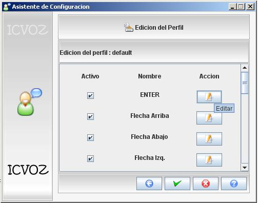
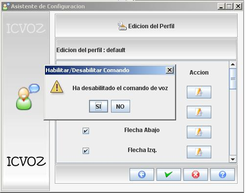
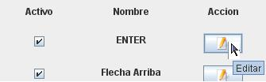
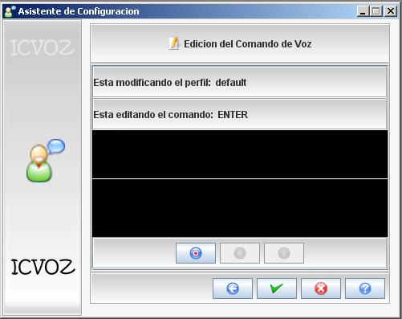

En este modulo aparecera una tabla con los comandos que el sistema
va a utilizar, en sus columnas aparecen activo, nombre y accion, aqui
se mostraran 20 comandos a utilizar.

Para activar o desactivar un comando se necsita hacer click en el cuadrito
con el chulo que esta al lado izquierdo del nombre del comando, esta accion
desplegara un cuadro de texto diciendo si desea desactivar o activar el comando.

Para modficiar un comando se debe hacer click en el boton modidicar que se
encuentra al lado derecho del nombre del comando. Esta accion desplegara una
ventana la cual te mostrara la opcion de grabar el comando haciendo clcik en
grabar y apenas termines de decir el comando se podra hacer click en parar para
detener la grabacion y tambien se encuentra el boton reproducir el cual sirve
para
escuchar si quedo bien grabado el comando que se pronuncio. Por ultimo se hace
click en aceptar para que los nuevos cambios sean actualizados.
1)

2)
